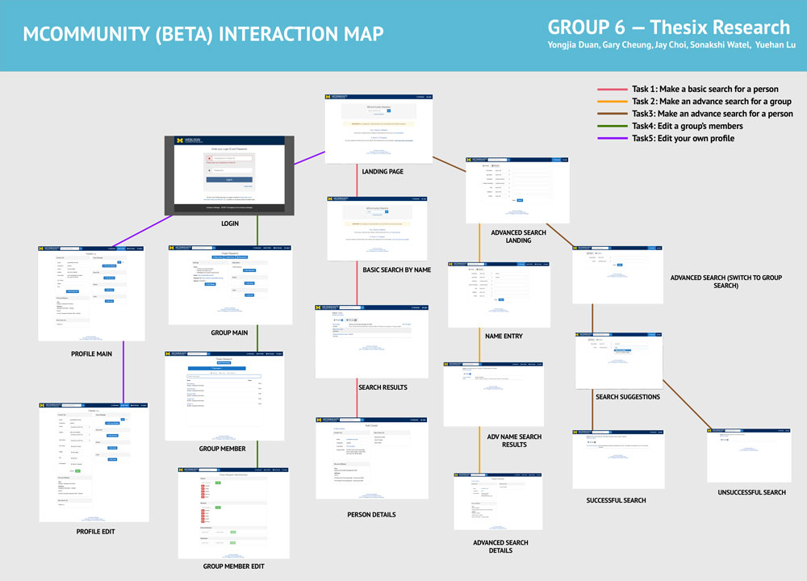
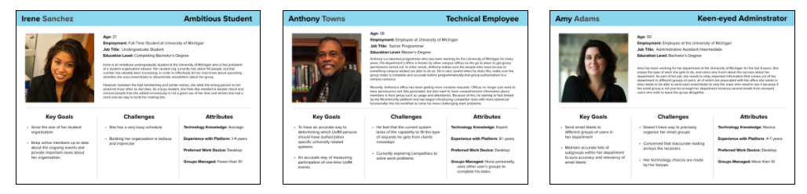
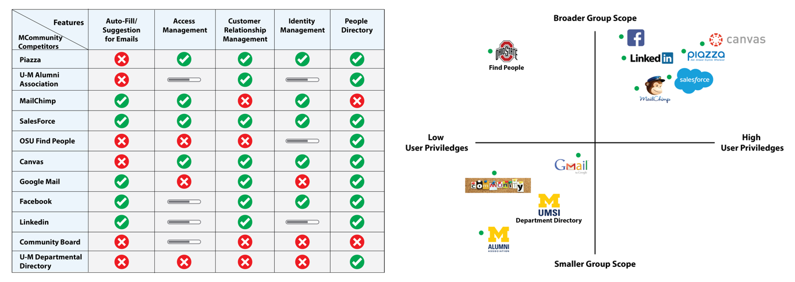
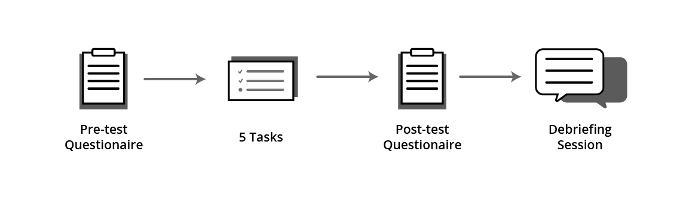

Project Overview
Summary
MCommunity is a identity management platform and people directory for the University of Michigan developed by the university’s IT services(ITS) department. The platform is being rebuilt from the ground up to be better compatible with modern browsers and to improve the user experience of the platform. During the January of 2017, ITS tasked our group of five user researchers with completing an in-depth evaluation of the beta platform and advising them on the usability of their beta platform.
Our team used a wide array of UX research methods to assess our client’s platform, from user interviews, personas, comparative evaluations to heuristic evaluation and usability testing. A report of findings and recommendations was created after completing each method.
User Research
Interaction Map
Our first research artifact was an interaction map, which we used to map the user flow for each of the main functions for the platform (managing university groups & editing personal information). 
User Interviews
To learn more about how members of the University of Michigan community used MCommunity, our group interviewed five people with different roles within the university. We interviewed one teaching faculty, one staff, one student org president, and two students.
From our interviews, we learned the following about users’ experience with MCommunity:
- Staying in the loop: Across all of the interviews, creating mailing groups was viewed as the most important function of the platform.
- Unreliable Information: Looking up individuals contact information with MCommunity was typically an unproductive experience because it is usually out of date.
- Unaware of the beta: Very few of our interviewees were aware of the MCommunity platform despite it being in public beta for a significant period.
- Desktop preferred: Interviewees more often used MCommunity on desktop than on mobile.
Personas
Based on our interviews, we created three personas as research artifacts in order to show ITS who MCommunity’s users were. Each personas was developed based on real traits and behaviors of our interviewees.
Amy, the university staff member: Uses MCommunity to manage her departments mailing lists and send out emails about upcoming events and important notices. Her biggest challenge is dealing with students who are upset about missing important messages and those who want to be removed from specific mailing groups.
Anthony, the IT staff member: Uses the platform to manage access privileges for different members of the university. He is frustrated that the platform does not provide enough details about individuals since this is frequently requested from this office.
Irene, the student org president: Uses the platform to manage the student group she leads. She often manually enters the names of new org members into MCommunity, and wishes that was easier to search for people who write illegibly on org sign up sheets.

Comparative Evaluation
A competitive evaluation was completed where we evaluated MCommunity and competitors. Competitors were determined based on the main features as identified by our interviewees. This was an important set because we learned that some departments in the University opt to use MCommunity’s competitors to manage their mailing groups.
Based on our evaluation, we made the following recommendations:
- Improve the search functionality on MCommunity: Compared to its competitors, MCommunity’s search feature spelling of queries to get accurate results. We suggested autocomplete as one option to hint at how a tem should be spelled.
- Check information accuracy: We learned that many MCommunity competitors periodically asked users of their person information was correct to ensure accurate. We suggested that MCommunity implement the same to improve it’s functionally as an identity management system.

Survey
Our team released a survey asking university members about their experiences with MCommunity and evaluating what tasks were important them. The survey was completed by 87 people.
We learned the following about how users used the platform:
- 72% have never used the platform on a mobile device.
- Leaving a mailing group was ranked as the most difficult task to complete using the platform.
- Being unable to find a person using the platform, or getting inaccurate information after finding someone was seen as the most frustrating parts of the platform.
Heuristic Evaluation
We conducted a heuristic evaluation of the beta platform using Neilsen’s 10 usability principles. Our group collectively determined a list of criteria to evaluate and each conducted an independent evaluation. Each criteria was rated from 1-4 with four being the most severe.
When our group shared our evaluations, we identified three key issues with the current beta.
- Documentation is hard to find: When we got stuck on a task, it was difficult to find documentation on the platform. We recommended that ITS add a documentation link to the main page.
- No error prevention: The platform never warns us when there are unsaved changes to mailing groups, so users can leave without realizing their changes were not saved. We recommended adding an alert to catch this.
- Unclear roles: There are three different possible roles for mailing group members (Admin, Moderator, Member). It is unclear what privileges each role has as it is not explained. We recommended a explanation of each role be added to the group management page.
Usability Testing
We conducted five usability tests on the beta platform which focused on completing group management tasks. Each member of our group was responsible for recruiting an appropriate participant and completing a test.
See usability test technical plan and interview scripts here.

Findings
From our tests, we learned about the following the beta platform’s usability:
- Save button pushed out of sight: During the test, we had users create and add members to a mailing group. Doing so causes the save button to be pushed out of sight and users leave without saving changes.
- UI covers group name during deletion: In order to delete a group, the name of the group must be entered with exact capitalization and spacing for confirmation. However, the input box covers the group name during this task, making it hard to complete.
- Email aliasing is difficult: Mcommunity supports email aliasing so that group owners can send emails as their group (e.g. groupname@umich.edu). However, only 1 of the 5 testees were able to complete this task due to the process being unclear.
Recommendations
Based on our findings, we recommended the following:
- Save warning: Alert users when they leave a page with unsaved changes.
- Show group name during deletion: The group’s name should appear above the confirmation input box, so it does not matter if it is covered.
- More convenient link to documentation: We suggested that a documentation link be added to the navigation to aid with difficult tasks such as email aliasing.
Outcome
Beta Updates
Although not all of our suggestions were implement some changes were made based on our findings. Deletion now shows the group name so that it is easier to delete unused group and autocomplete is now available during management.
Figure: Deletion now shows group name on input.
Figure: New autocomplete hints at correct usernames.